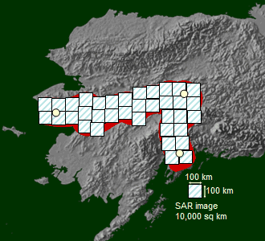

Follow Julie's calculations and try some for yourself
Note: you can use the help of a pocket calculator, or the calculator provided here.
Julie believes that Samuel may have traveled from Nome to Fairbanks to Anchorage. This total route is about 1800 km long.
Julie thinks that Samuel could have gone 100 km away on either side of the main track between Nome, Fairbanks and Anchorage. 100 km on either side means a total distance of 200 km across the main track.
You can imagine this as a 200 km broad zone where the track is in the middle. Scientists refer to such zones as "buffer zones." This buffer zone is the children's search zone.
The total area of the search zone = total length of the track multiplied by the total thickness of the buffer zone.
The total search area = 1800 km * 200 km = 360,000 sq km.

Each SAR image is about 100 km long and 100 km wide. Therefore total area covered by a SAR image is 100 km * 100 km = 10,000 sq km.
The minimum number of SAR images required to cover the total search area = total search area divided by total area of a SAR image = 360000/10000 = 36 images.
Note: In reality one would need many more images because successive images overlap and it is not possible to have an image start exactly where your search area starts.
Now calculate at least how many images the children would need to see if Samuel could have gone